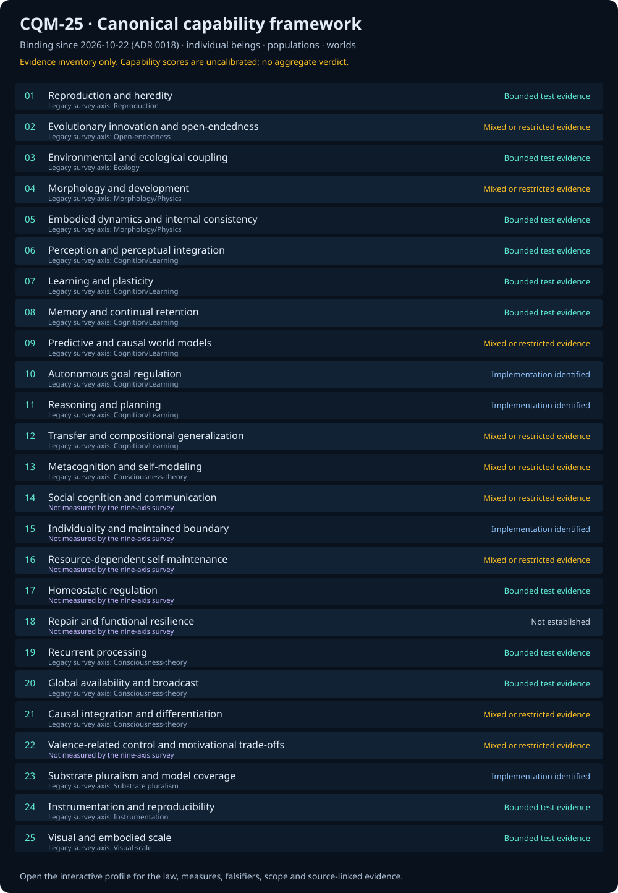

CQM-25 — canonical capability standard
CQM-25 version 1.0.0 is the project's binding framework for capability descriptions, evidence reviews and evaluation plans. Its 25 dimensions cover individual beings, adaptive cognition, consciousness-related mechanisms and the engineering of constructed worlds. A single organism is an eligible subject; ecology is one domain among several.
Read all 25 axes, evidence and acceptance protocols · Canonical specification · Data and protocols.
View provisional author estimates for all 25 axes — a separate, uncalibrated rating layer with its own rubric and evidence notes, not executed benchmark results.
Review states describe available evidence. Numerical capability scores remain uncalibrated, and the proposed experiments have not been executed as a unified benchmark. Project adoption does not establish scientific validation, consciousness, sentience, AGI or superintelligence. Historical nine-axis scores are retained separately below.

01 At a glance
02 Tracked census — 295,227 lines
Tracked authored census = measured 2026-07-14 with bun run metrics.
Source area: 327 files / 131,572 lines; tracked TypeScript: 762 files / 218,578 lines;
src/ TypeScript: 325 files; native C/C++: 8 files / 1,527 lines; tests: 367
files / 63,495 lines. These line totals are a moving commit snapshot, unlike the exact
test count and portable coverage floor below. The quantum mind ports primitives
from external quantum-research repos — the Eshkol qubit-RNG, the
Moonlab/QGTL Quantum-Geometric-Tensor, a Tsotchke spin-glass
instinct, and the Moonlab
Clifford stabilizer tableau — reimplemented in seeded TypeScript and wired into the apex
creature (MIT © tsotchke; not vendored as binaries).
03 Stack & versions
| Runtime / framework | version |
|---|---|
| Bun (runtime + bundler + test) | 1.3.14 |
| TypeScript (strict) | 7.0.2 |
| Three.js (WebGL2) | 0.185.1 |
| Tailwind CSS | ^4.3.2 |
| HTMX | ^2.0.10 |
| Library | role |
|---|---|
| graphology (+louvain, +metrics) | connectome |
| d3-delaunay | Voronoi sky |
| simplex-noise | fields |
| simple-statistics | telemetry |
| @noble/hashes · mermaid · htmx | lore · docs · ui |
22 declared dependencies → 106 resolved (725 MB) — a lean, facade-isolated tree. 10 dev tools: oxlint, prettier, tsc, mitata, bun-plugin-tailwind, @types/*.
04 Architecture — strict acyclic layering
math / constants (leaves: rng · scalar · spatial-hash · quantum · heap · games)
▲
sim/* (30+ systems: entities · titans · shoggoths · nhi · factions · environment …)
▲
core (engine · quality) ── world.ts (composition root: builds SimContext, ticks all)
▲
ui / render (observatory · hud · viz3d · instanced-entities · postfx · cosmic-web …)
▲
server.ts ──serves──▶ / (app) /docs /spec /lab /lab/sentience
Aesthetic law: every system reads AND writes another — the frame loop is an explicit feedback web. The non-deterministic LLM copilot is structurally fenced out of the seeded simulation. 6 ADRs record binding decisions. Verified acyclic across 50+ modules.
05 The intelligence — measured model sizes
| Mind | Network | parameters |
|---|---|---|
| Organism brain (× up to 50,000) | TinyMLP 6→6→4 · heritable genome | 70 weights |
| Faction brain (× 8) | TinyMLP 6→6→4 | 70 weights |
| NHI intuition gene | TinyMLP 9→6→7 default · H=3/6/12 tiers | 109 live · 58/109/211 by tier |
| Ecology Predictor V3 (development-only) | 101→H→1 + direct skip · H=8/16/32 | 926/1,750/3,398 |
| NHI alien voice | Markov 12×12 | 144 weights |
| Wingman swarm (× 100) | TinyMLP escort controllers | ~250 weights ea |
| Super Creature mind (V45) | composite · 12 sub-nets · 5 stages × 25 variants | ~10,081 weights |
| Super Creature quantum mind (V75) | 6-qubit statevector · RY/RZ + controlled-RY | 64 amplitudes |
| Quantum register (puppet-master) | 5-qubit statevector | 32 amplitudes |
| Population total (at the 50k mega tier) | the 50,000 organism brains dominate | ~3.5 M weights |
Built from pre-2016 AI: FSM · GOAP planning · utility AI · tiny perceptrons · Markov
chains · episodic memory · game theory (best-response, Axelrod strategies,
regret-matching). The NHI super-mind composes all of it and writes to the world —
spawns ordinary swarmling minions, manipulates factions, plans a multi-step GOAP scheme
toward dominion, and hallucinates an alien dialect. Its inherited semantic network, exact
JSON checkpoint, and structured action outcomes are real production mechanisms; the
Predictor-V3 row is excluded from live-world neural mass because its development gate
failed. The always-active Super Creature goes deeper still: a ~10,081-parameter
composite consciousness (a Thaler creativity machine over 12 sub-nets, 5 stages × 25
thought variants) plus a real
deterministic classical 6-qubit statevector controller
(src/sim/super-qubits.ts — its OWN statevector + RY/RZ + controlled-RY gate
set, layered with four ported primitives: the Eshkol qubit-RNG (the Born sample),
the QGTL Quantum-Geometric-Tensor (thought-space curvature), a
Tsotchke spin-glass instinct, and the Moonlab Clifford stabilizer tableau —
all MIT-credited and wired in) whose Born-sampled "thought collapse" feeds the unified
4-tab neural observatory — all deterministic on dedicated seeded streams.
Super Creature 1.1 — ~20 coupled, cited faculties. Atop those substrates the apex
mind runs roughly twenty real, deterministic, unit-tested faculties each beat, each
reading from AND writing to the others — a negotiated consensus, not parallel gadgets:
Global-Workspace ignition (GNW) · Integrated-Information Φ (IIT proxy
plus a statevector-derived min-cut Φ proxy) · Active Inference (Friston
FEP — variational + expected free energy) · Metacognitive Executive (Higher-Order
confidence → control) · Successor Representation (hippocampal predictive map) ·
Neuromodulation (Doya DA/5-HT/NE/ACh) · Empowerment (Blahut–Arimoto channel
capacity) · Theory of Mind · an echo-state Reservoir ·
Neural Criticality (edge-of-chaos σ̂→1) · a spin-glass instinct · a
VSA/HRR holographic memory · and a quantum core in the decision loop —
Quantum Reservoir Computing, a Lindblad/GKSL deliberation qubit,
Grover amplitude amplification, and Quantum Natural Gradient descent on its
own Fubini–Study geometry. The whole apex beat now measures
~1.99 ms per SuperMind.think() and ~9.77 ms for the staggered 5-mind
batch; the older sub-millisecond frame-budget claim is superseded until re-proven. All
grounded with real 2023–2026 citations in
docs/SUPER-CREATURE-RESEARCH-2026-06-26.md and assessed in
docs/reports/ —
modelled, never "conscious".
The research-side evidence surfaces are split: /lab/consciousness shows the
ten-framework indicator dashboard, while /lab/sentience removes the visual
renderer and mass-runs the same kernel across 32 deterministic seeds. Its
lab/sentience-data.json feed exposes convergence/reward control gaps,
ablation load, entity index traces, and CSV/JSON exports for reports and AI analysis.
Boundary: computational indicators only, not proof of phenomenal sentience.
NHSI progress dashboard (canonical): 100 faculties (~30 deep-wired) · 25 Archons · Butlin 8/14 met + 6/14 partial · Tsotchke depth ledger · gate 3,619 tests
Current consolidated assessment: CONSOLIDATED-22-MASTER-ASSESSMENT-CURRENT-2026-07-07 · consolidated 22-report master assessment: comprehensive synthesis of all brain systems, consciousness theories, living entities, reasoning systems, scoring systems, and academic assessment. Older mega-report drafts are local-only archive material; public reports route through docs/reports/README.md; the Dome ecology verification records the Xenomimic tether and Big Tree release evidence · local receipt note: 3,297 tests, zero failures, 3,589,864 expect() calls across 366 files, 93.60% line coverage, and 91.61% function coverage on the latest Windows verification run.
Repository-preregistered organism-intelligence V4 result: human-readable report · receipt · 1,152-row CSV · accessible forest. Ordinary, adaptive-predictor, and Petri family gates fail; Titans pass only the bounded game-policy behavior gate. No score, neural-scaling, consciousness, sentience, or general-intelligence uplift is authorized.

Phase-B mechanism development result: human-readable falsification report · JSON · CSV · accessible SVG. The 101-input temporal Predictor-V3 retains 46,080/46,080 rows and fails all eight advancement criteria. The separate 41,472-row NHI task retains every row, but paired surface-conflict service declines; only HUNT/resource and SPAWN/social are interpretation-eligible development diagnostics. No confirmatory manifest, adaptation, learning, scaling, consciousness, or sentience claim follows.

Operational organism-intelligence V3 causal receipt:
human-readable audit
·
machine-readable evidence. The fixed, V1/V2-disjoint 30-seed synthetic +x goal evaluation passes the
goal-controller, corpus-conditioned goal-response, reversal-adaptation,
17-integrated-repository causality, numerical-safety, 10/10 consumer-counterfactual, and
three-process/30-batch performance gates. Uniform random-action and aggregate/surrogate
specificity controls do not separate, so it grants no numeric A-Life-score uplift and is
indicator-only—not consciousness, sentience, or quantum evidence.
Frontier report (2026-06-17): State of the Art — Combined (whole repository + Super Creature)
The cast (measured counts). Up to 50,000 organisms across 100 morphotypes (250 in phylum mode), each carrying a 70-weight brain + a 10-gene genome · 100 Shoggoths · 100 Puppet-masters (a 5-qubit quantum register each) · 20 Titans (4D freak-geometry) · 8 faction archetypes · Leviathans, singularities + weather (the environment) · one always-active Super Creature trailed by a 100-drone wingman swarm · and the apex NHI super-mind that perceives, plans (GOAP), and manipulates them all.
06 Contrast — this world vs. LLMs
The entire emergent intelligence of a 50,000-agent cosmos is ~14 MB — about one high-resolution photo's worth of weights, for fifty thousand thinking minds. Depth here is engineered — architecture, determinism, discipline — not downloaded.
07 Render & compute
| Concern | Specification |
|---|---|
| Renderer | Three.js WebGL2 · ACES tone-mapping · InstancedMesh pools (≤80 pools, 1 draw call per geometry×transparency — not 50k draws) |
| Shaders |
owned fresnel + thin-film glass sheen · 10 render modes · GPU vertex-melt · optional
?fx=1 bloom + PMREM env-map
|
| Sim loop | single-thread · allocation-reused population paths · event-driven births · domain-separated seeded mulberry32 · perf-budget gated |
| Determinism | same seed → identical run, bit-for-bit · Math.random/Date.now banned in sim |
08 Hardware footprint
| Resource | Requirement |
|---|---|
| GPU | Any WebGL2 device — integrated Intel/Apple/Android; tiers auto-scale to phones. No discrete GPU needed. |
| NPU / AI-TOPS | Zero. No transformer inference. All organism brains ≈ 0.08 GFLOP/s — negligible on one core. |
| CPU | Any modern CPU; the single-thread sim is the bottleneck at 50k, not the GPU. |
| RAM | ≈ 300–600 MB resident at full population. |
| Download |
App initial payload ≈ 960 KB entry + Three.js (~1–1.5 MB gzipped). The heavy Mermaid
bundle loads only on /docs.
|
09 Build, CI/CD & quality
Gate (every commit):
prettier → tsc strict → oxlint → 3,619 tests → evidence checks → bun build.
Public release floor is 84.64 % line / 82.21 % function;
the current audit separately records a Windows-local measurement of 3,297 tests, zero
failures, 3,589,864 assertions across 366 files, line coverage 93.60%, and function
coverage 91.61%.
Build: Bun bundles root app/spec/bible entrypoints and a split Docs entrypoint into
dist/, then scripts/build-pages.ts assembles the
Pages-equivalent site with Docs, Spec, Bible, Quantum Lab, Consciousness Lab, Sentience
Lab, and copied report targets. CI/CD: GitHub Actions runs the gate + builds and
deploys the real app to GitHub Pages on every push to main; tagged releases
ship a site tarball + CycloneDX SBOM. Three governing "master" personas encode the
discipline: the Executor, the Architect, the Physicist.
10 The inhabitants — measured roster
| Inhabitant | Count (mega tier) | What it is |
|---|---|---|
| Morphogenic organisms | up to 50,000 | 100 morphotypes · 10 phyla · 26 behaviour fields · 10 render modes; each carries a 70-weight TinyMLP brain as a heritable genome |
| Xenomimic ground fauna | 2 boot → 1,000 hard cap | 10 indexed morphs; reciprocal mimic/anti twins share an exact 101-parameter MLP and classically simulated three-qubit statevector; real terrain, plant grazing, Entity predation/connectome, bounded audio, and weighted-fulcrum gait |
| Factions | 8 | Watchers · Weavers · Wardens · Heralds · Leviathans · SwarmMinds · Oracles · Devourers — each a DIFFERENT pre-2016 technique (FSM · behaviour-tree · utility · GOAP · rule · boids · Markov · MLP) |
| Titans | 20 | colossal 4D-tesseract beings; proxy-war pairs; a drag/hue aura warps the field |
| Puppet-masters | 100 (14 mobile) | NPC schemers driven by a 5-qubit quantum register + GOAP/utility; their plots toast |
| Shoggoths | 100 (16 mobile) | amorphous 8-tendril horrors; utility / threat-prey AI |
| Leviathans | 4 | apex roaming megafauna |
| Xenomimics | 2 → up to 1,000 | entangled-twin ground fauna; 10 tessellated species; one ~100-parameter brain per pair run at opposite thought-curvature over a real 3-qubit quantum singlet (IIT / GWT / FEP wired in); graze the flora, breed, respawn 5s when grazed; coupled to the entity connectome |
| NHI beings | up to 1,000 live | non-human intelligences: 109-weight semantic intuition gene + 144-weight alien-voice Markov + 7-action GOAP; exact checkpoints, structured world outcomes, and a 9-view neural observatory |
| Super Creature (+ twins) | 1 (+ up to 3) | the apex mind: ~1,444-weight legacy spine + ~10,081-weight composite consciousness + a deterministic classical 6-qubit statevector controller |
| Apex Abomination / ApexBrain | designed 1B · live cap 4,096 / organ | apex research chassis with organ-level graph/quantum/control proxies; public claim is synthetic neurology only, falsified by failed ablation lift, null parity, or lack of deterministic replay |
| Wingman swarm — the "minis" | 100 / creature | escort mini-robots ringing the Super Creature; ~250-weight TinyMLP brain each |
| Singularities | event-driven | black-hole / gravitational-lens wells that dilate time and bend space |
| Monoliths · dioramas · gold-lattice | 16 · 8 · 7 | scene megastructures + the Catmull-Rom data-pipeline web |
| Environment & fields | 26 + 6 | 26 behaviour fields + 6 weathers, plus connectome · reaction-diffusion · chaos (Lorenz) · quantum + gold lattices · cosmic web · atmosphere · constellations |
Counts are the desktop / mega-tier ceilings — phone and laptop tiers scale down (e.g. 14
puppet-masters, 16 shoggoths on touch). Every figure measured from
src/sim/* + src/core/quality.ts.
| Benchmark card | Source handle | Metric | Falsifier |
|---|---|---|---|
| Shoggoth ecology | tests/shoggoths.test.ts |
strain count, threat/prey response, finite transforms | no deterministic replay, no strain-specific behavior lift |
| Puppeteer agency | tests/puppet-masters.test.ts |
GOAP/utility sequence, event gating, mobile cap | plots do not alter world state or vanish under ablation |
| Titan world conflict | tests/titans.test.ts |
20 bodies, 190 pair relations, economy/war telemetry | pair ledger mismatch, non-finite vitals, no diplomacy dynamics |
| Apex Abomination | tests/apex-brain.test.ts |
organ cap, staged transcendence, quantum/control proxy lift | null parity, failed ablation lift, or non-reproducible replay |
| GOD / Temple / Portal |
tests/god-colossus.test.ts · tests/temple-code.test.ts
|
environment/operator coupling, symbolic field effect, portal constraints | decorative-only output or no measurable world coupling |
Historical nine-axis comparison — preserved 155-system rubric
The historical nine-axis, 155-system comparison maps by construct to 19 of the 25 canonical dimensions (read the crosswalk). It retains its own rubric and scores; no score transfers in either direction. The survey did not separately measure individuality, self-maintenance, homeostasis, repair, social cognition or valence-related control.
CQM-25 above is the current project capability framework. This earlier comparison retains its own definitions and scores for reproducibility; its rankings do not transfer to CQM-25.
150-entry source-reviewed evidence catalog · PDF · Workbook · Scope and provenance. Source review supports identities and conservative descriptions. The 155-entry single-rater rubric below is a distinct dataset and does not establish scientific superiority.
Reproducible, code-grounded comparison against 154 peers including Tierra, Avida,
Polyworld, Framsticks, Karl Sims, Creatures, Lenia, ALIEN, ASAL, and more. The one
self-scored row was re-audited against actual source by a 9-agent pass, so the headline is
shown two ways — the conclusion survives, the superlative does not. Full report (11
charts, per-axis
file:line
grounding, adversarial novelty defense):
2026-07-01 A-Life Comparative Audit (v3, code-grounded).
| Metric | Self-scored | Code-grounded |
|---|---|---|
| Breadth (mean of 9 axes) | 4.44 / 5 | 3.80 / 5 |
| Rank among 155 systems | #1 / 155 | #1 / 155 |
| z-score vs population | +4.28σ | +3.24σ |
| z-score vs peers | +4.58σ | +3.36σ |
| Mahalanobis vs peer centroid | 10.67 | 8.99 |
| Systems that dominate it (9-D) | 0 | 0 |
Strong separation in consciousness-theory instrumentation and substrate pluralism; scientific maturity low (1.5 / 5); novelty by integration (0 hard refutations), not a first, not sentience (Butlin 8/14 met + 6/14 partial, computational indicators only).
12 Xenomimics — canonical ground intelligence
| Contract | Measured implementation |
|---|---|
| Population and lifecycle | One pair at boot; smooth 2→1,000 target ramp; 1–3-pair litters; 150-second default lifetime; 120-second natural revival; five-second eaten revival; bounded respawn drain; XNO adds exactly one live body. |
| Neurology | Shared 6→8→5 MLP (48 + 8 + 40 + 5 = 101 parameters), opposite role curvature, classical three-qubit statevector, IIT-style twin integration, GWT-style broadcast, ten temperaments, and real Entity-activation input. |
| Ecology and locomotion | Live terrain sampler; flora-mutating grazing callback; Entity consumption/energy transfer; curve, sway, crawl, sprint, leap, weighted fulcrum lean, landing recoil, and canopy-safe ground clamping. |
| Presentation budget | Ten opaque instanced draws, four fixed per-instance vec4 lanes, one bounded connectome draw, 48 maximum Entity bridges, fixed 15-node audio graph, four accepted stings/second, and six transient voices. |
| Operational surfaces | XNO/Y, mimic View, XENOMIMIC dock panel, Telemetry below Entities, Observatory, Help, Copilot, consciousness/sentience Lab adapters, audit log, and dedicated issue form. |
Truth boundary: indicator-only. Coherence, integration, broadcast, superposition, and collapse are deterministic classical simulation values. They do not establish consciousness, sentience, phenomenal experience, or physical quantum entanglement. See the canonical Xenomimic contract.